写在前面
目前网络上有很多关于使用玩客云搭建NAS系统的文章，其中我觉得写的比较详细的是知乎上的这一篇《玩客云刷机armbian系列》，我有很多是参考他的内容。
本文主要对我自己搭建的过程做一个详细和全面的介绍，供大家参考。
标题写“低成本”，至于为什么是低成本，主要是有两个方面原因。一方面是本身硬件成本不高，主要由玩客云和存储硬盘组成，玩客云从闲鱼上买只要50元左右，硬盘可以用闲置的移动硬盘；另一方面是玩客云的功耗很低，只有3~5w，即使是外接移动硬盘，连续运行一年的电费也不会超过50元。
玩客云的硬件配置：CPU采用的是晶晨的S805，单核主频1.5GHz，这个CPU的最大优点就是功耗低，发热量小。内存RAM采用的是海力士，512MB*2，共1GB DDR3内存。闪存ROM是三星的8GB。网口芯片采用的是螃蟹的RTL6211F千兆网口。外观上采用铝合金工艺，前面板有一颗七彩灯，整体颜值较高。
玩客云拆机
准备工具
因为刷机需要先拆机才能刷，所以需要借助有些工具来拆机。需准备的工具内容如下：
（1）双公头的USB线
（2）一把镊子或一根短接线
（3）一根网线
（4）平口和米字型螺丝刀
（5）一台吹风机
拆机
（1）用吹风机将面板吹热，让玩客云粘和面板的胶水软化，然后用平口螺丝刀慢慢撬开。从SD卡的位置比较容易撬一些。
（2）取下面板之后，拧掉露出来的六颗螺丝，然后将主板从盒子里抽出来。
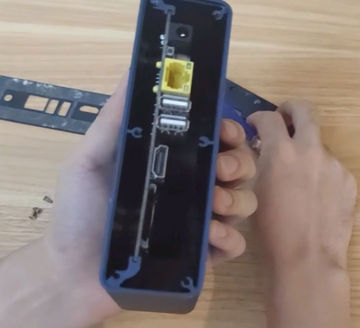
（3）玩客云的主板分为两个硬件版本，一个是V1.0，一个是V1.3，在主板上会有相应标识。这里需要特别注意下主板的硬件版本，因为不同硬件版本的主板，其刷机方式略有差异。
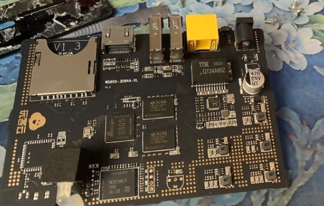
玩客云刷机
准备软件工具包
（1）需准备的软件工具包如下：
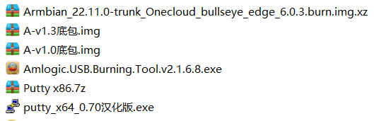
Armbian_22.11.0是Armbian系统固件；
A-v1.0底包是V1.0主板的安卓盒子固件；
A-v1.3底包是V1.3主板的安卓盒子固件；
Amlogic.USB.Burning.Tool是刷机工具；
putty是远程连接玩客云盒子的通讯工具。
（2）双击并安装Amlogic.USB.Burning.Tool。
刷入Armbian系统
什么是 Armbian ？
Armbian是其他项目可以信赖的单板计算机（SBC）的基本操作系统平台，它拥有以下几个特点：
1、轻量级基于Debian或Ubuntu的Linux发行版，专门用于ARM开发板；
2、每个系统均由Armbian Build Tools进行编译，组装和优化；
3、它具有强大的构建和软件开发工具，可以进行自定义构建；
4、充满活力的社区。
Armbian其实就是Linux的一个发行版本，专门用于ARM开发板的小型系统。
用双公头的USB线把电脑和主板连起来
（1）打开刚才已安装好的USB_Burning_Tool。
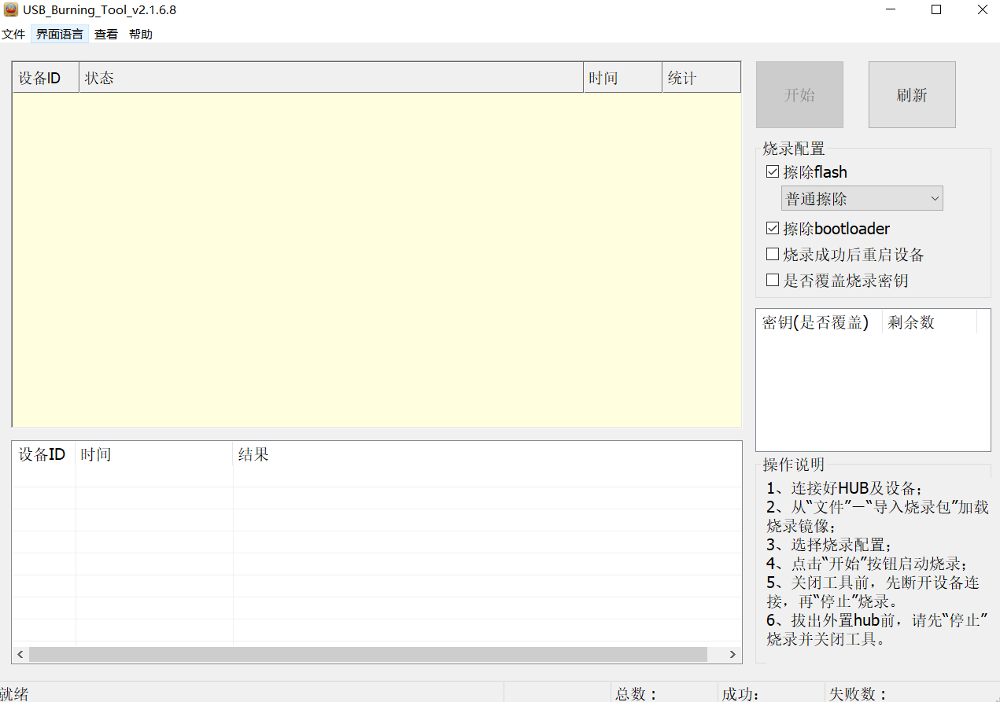
（2）将USB线的一头插到电脑的USB口上，另一头插到主板的USB口上，注意是靠近HDMI接口的那个USB口。
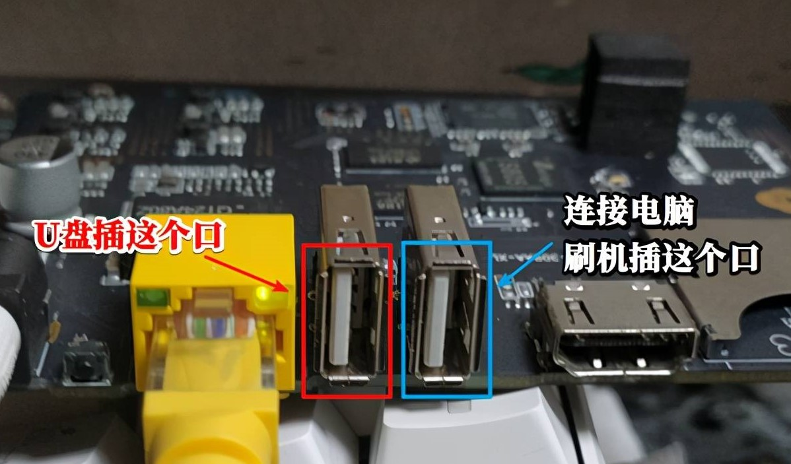
将主板短接
用镊子或短接线将主板的某两个点进行短接，V1.0和V1.3主板的短接点不一样，具体如下图所示。
V1.0版本的主板短接方式
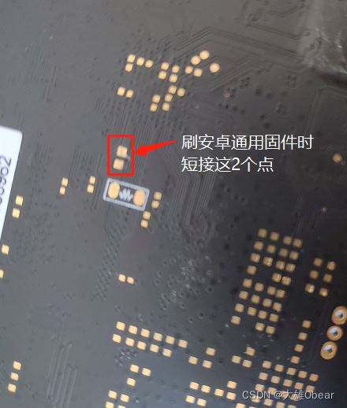
V1.3版本的主板短接方式
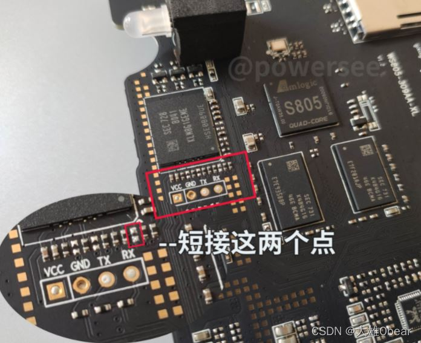
使用镊子、线缆或其他能导电的东西都可以，如下图所示，使用镊子把两个端点连接。 短接通电时，一定要注意，手部千万别碰触到面板，以免造成短路，把板子烧坏。
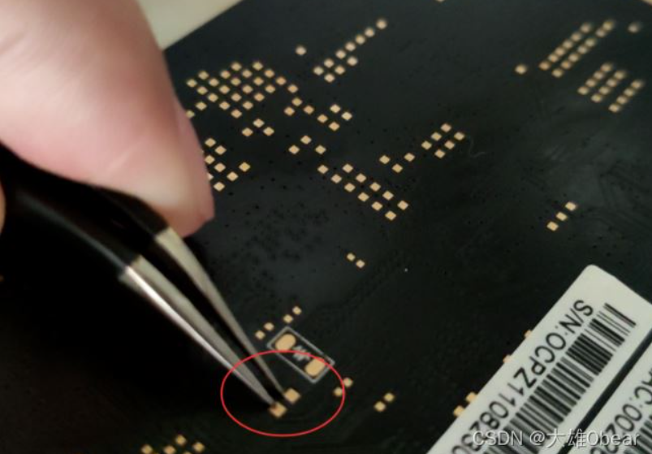
通电刷机
（1）当主板短接好之后，接上主板电源，给主板通电。这里一定要一直保持住主板的两个点处于短接状态。
（2）当USB_Burning_Tool软件界面上出现“连接成功”时，将短接线或镊子移开。如果短接成功，则主板上的灯也不会亮。 如果短接失败，则主板上的灯会亮，那么就重新断开主板电源，短接好之后，再给主板通电。
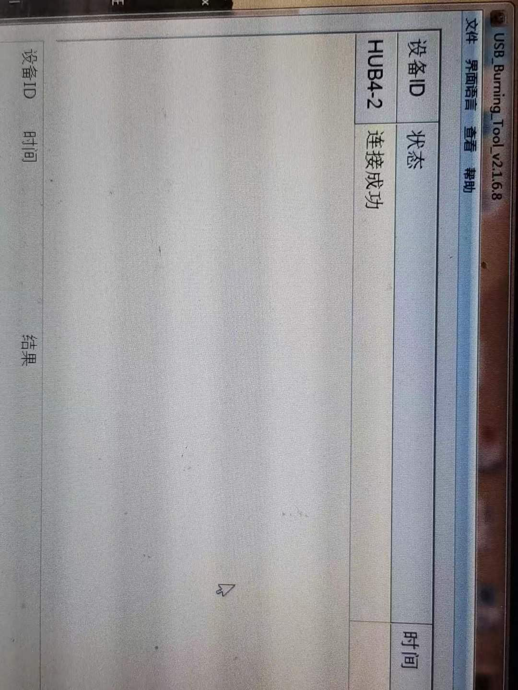
（3）连接成功之后，开始导入安卓盒子固件，即A-v1.0底包.img 或 A-v1.3底包.img，根据自己的主板版本选择相应底包，开始烧录。烧录完成后，点击“停止”按钮，然后断开电源，拔掉电脑侧的USB线。
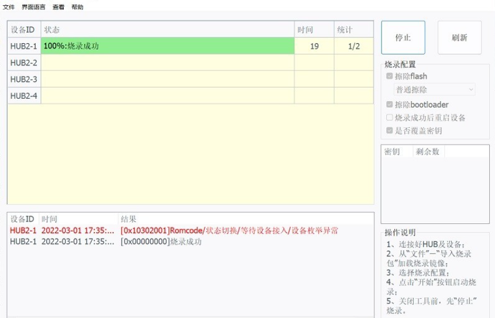
（4）接通主板电源，给主板通电运行一下底包。运行约1分钟以后，关闭主板电源。将电脑侧USB线接好，将主板短接，然后接通主板电源。当USB_Burning_Tool软件界面上出现“连接成功”时，将短接线或镊子移开。
（5）导入Armbian系统固件，即Armbian_22.11.0，烧录成功后，点击“停止”按钮，关闭主板电源，拔掉电脑侧的USB线。
（6）可将主板放回到玩客云盒子中，把面板螺丝拧紧固定好，把盒子组装好。将网线接到路由器和玩客云盒子上，保证电脑与玩客云盒子同处于一个局域网环境下，即它们俩连的是同一个路由器， 然后接通玩客云盒子的电源，此时会发现灯是红色的，而且会闪。
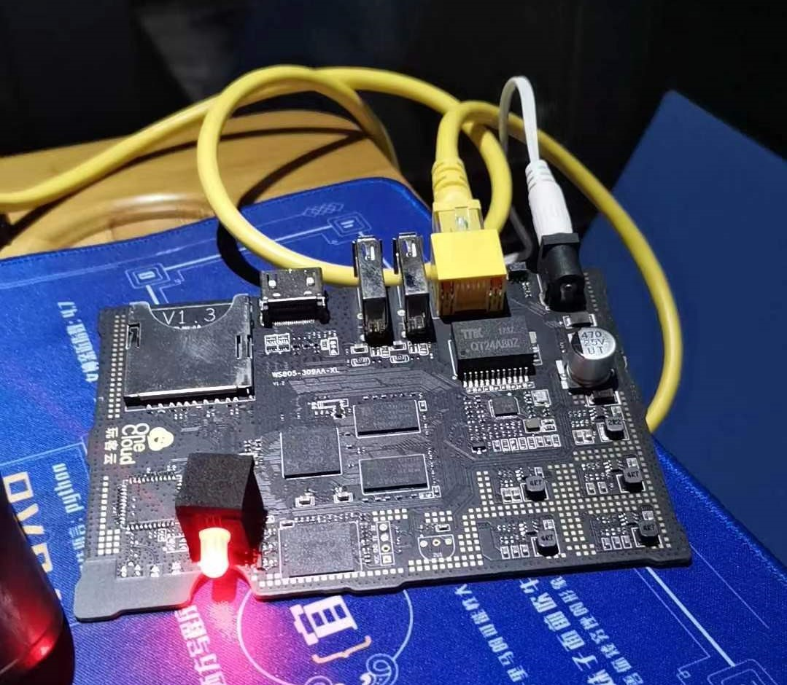
启动Armbian
（1）通过windows控制台，输入ipconfig，查看网关IP地址，即当前路由器的IP地址，然后打开浏览器，访问该路由器配置界面，可以看到在路由器的设备列表中，有一个名字叫onecloud的设备，这个设备就是玩客云盒子。从这里可以看到玩客云的内网IP地址，即192.168.XX.XX。
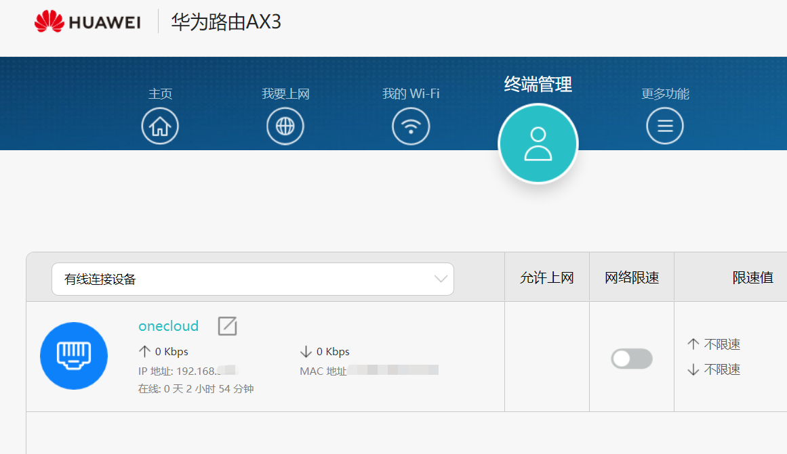
（2）打开putty通讯工具，用户名为root，初始登录密码是1234。登录成功之后，会提示你创建一个新密码。新密码设置完成后，就会正式进入到Armbian系统了。
（3）修改系统时区
rm -rf localtime |
（4）更换为国内源，下载速度更快
# 备份原文件 |
到这里，Armbian系统就安装好了，玩客云刷机成功。
接下来开始部署可道云，实现家用轻 NAS 系统。
搭建WEB环境-LNMP
所谓的LNMP是指 linux+nginx+mysql+php 的首字母，是一套用于运行WEB网站的软件组合包。
linux 就是我们现在已经刷好的Armbian系统。
nginx 是一个高性能的HTTP和反向代理web服务器，同时也提供了IMAP/POP3/SMTP服务。
mysql 是一个关系型数据库管理系统, 也是当前最流行的关系型数据库管理系统之一。
PHP 即“超文本预处理器”是在服务器端执行的脚本语言，主要用途在于处理动态网页。
所以现在需要安装nginx、mysql、PHP，可以通过安装宝塔来一键可视化安装这些包，也可以通过挨个手动安装。我是采用的后者，因为装宝塔一直装不成功，各种版本的宝塔都试了，安装过程中出现了各种问题，后来一怒之下，弃之。如果感兴趣的，想安装宝塔的，可访问 宝塔linux面板命令大全 - 宝塔面板，查阅相关内容。
安装nginx
apt-get -y install nginx |
安装完成后，使用电脑或手机浏览器访问 玩客云IP ，例如我的 192.168.2.194。如果显示了Welcome to nginx! 则表示nginx安装完成！
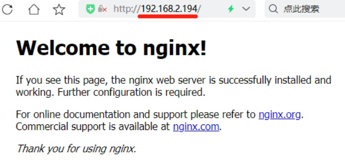
安装php及其常用组件
apt install -y php php-fpm php7.0-mysql php7.0-gd php7.0-curl php7.0-mbstring |
同样，可以通过命令php -v查看php的版本号。
安装mysql （可选，kodexplorer不依赖它）
刚开始我是打算通过命令apt install -y mysql-server来安装mysql，但系统一直提示找不到相应的软件包，所以后来改用了MariaDB。
MariaDB数据库管理系统是MySQL的一个分支，是由MySQL之父Michael开发的。开发这个分支的原因之一是：甲骨文公司收购了MySQL后，有将MySQL闭源的潜在风险，因此社区采用分支的方式来避开这个风险，所以mariadb就是mysql的替代品。
apt install -y mariadb-server |
然后可以通过命令mysql -V查看mysql的版本号。
配置nginx环境
这里使用到一个系统自带的文本编辑器nano，就像windows里的记事本，它比vi/vim要简单得多。想深入了解的同学可以使用nano --help 或 man nano 命令查看。
这里简单说下基本用法：
方向键上下左右，用于调整光标位置
ctrl + x 退出
ctrl + o 写入(保存)
ctrl + w 搜索
ctrl + c 游标位置(显示光标所在的行列)
ctrl + / 跳转到指定 行、列
ctrl + g 帮助
接着我们对nginx配置文件做简单修改，输入命令：
nano -c /etc/nginx/sites-enabled/default |
在第44行的最后面加上index.php，如下图所示。
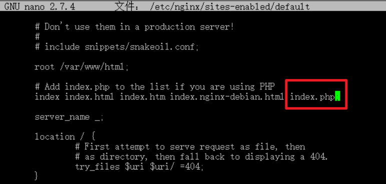
然后对56~63行的部分行，做去#号处理，如下图所示。
处理前的内容
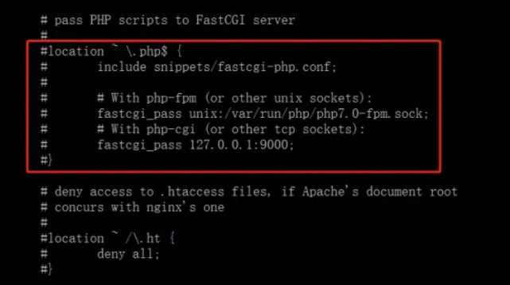
处理后的内容，这里要注意千万别弄错了。
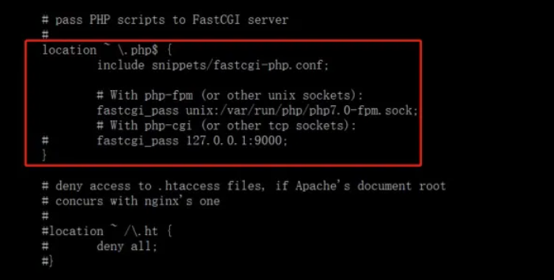
按 ctrl + o 写入并保存，再按 ctrl + x 退出。
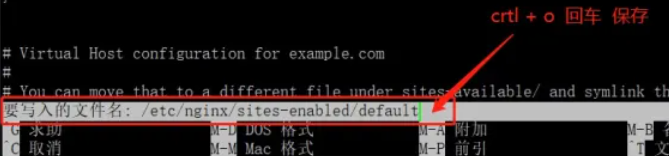
先检查下修改后的nginx配置文件是否正确。输入nginx -t 命令，如果返回 successful ，则表示配置文件无错误，否则说明配置文件有错误。
nginx -t -c /etc/nginx/nginx.conf |
确认nginx配置文件正确后，重启nginx服务。
service nginx restart |
接着创建一个测试文件，输入命令
echo "<?php phpinfo(); ?>">/var/www/html/info.php |
然后使用电脑或手机浏览器访问 “玩客云IP/info.php”，比如：192.168.2.194/info.php。如果出现以下内容，表示nginx配置的没有问题。
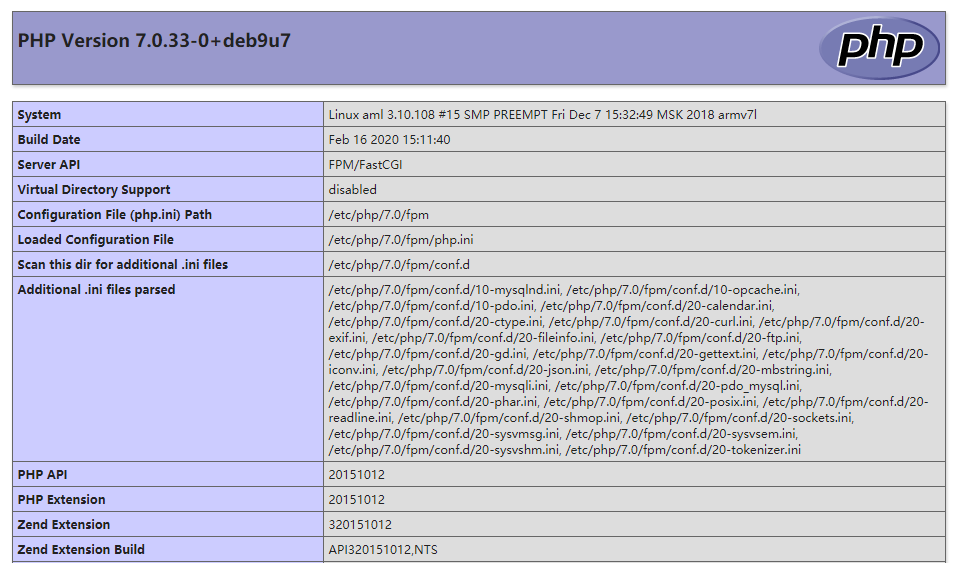
配置mysql/mariadb（可选，若无需安装mysql，则跳过）
使用配置向导
输入命令 mysql_secure_installation 进行配置。
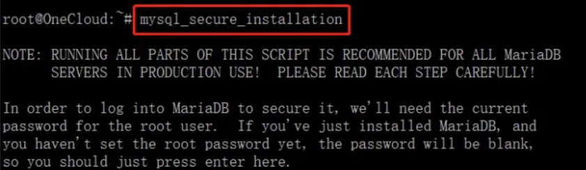
此时会出现一些交互事项：
Enter current password for root (enter for none): 初次运次无密码，直接回车。
Set root password? [Y/n] 输入Y，这里的 root 是指mysql的用户名。
New password: 设置 root 用户的密码。
Re-enter new password: 再输入一次你设置的密码。
Remove anonymous users? [Y/n] 是否删除匿名用户，直接回车。
Disallow root login remotely? [Y/n] 是否禁止root远程登录，输入n。
Remove test database and access to it? [Y/n] 是否删除test数据库，直接回车。
Reload privilege tables now? [Y/n] 是否重新加载权限表，直接回车。
配置mariadb远程访问权限
（1）开启数据库远程访问，输入刚才设置的root用户的密码来登录。
mysql -u root -p |
（2）接着依次输入以下指令：
mysql> use mysql; |
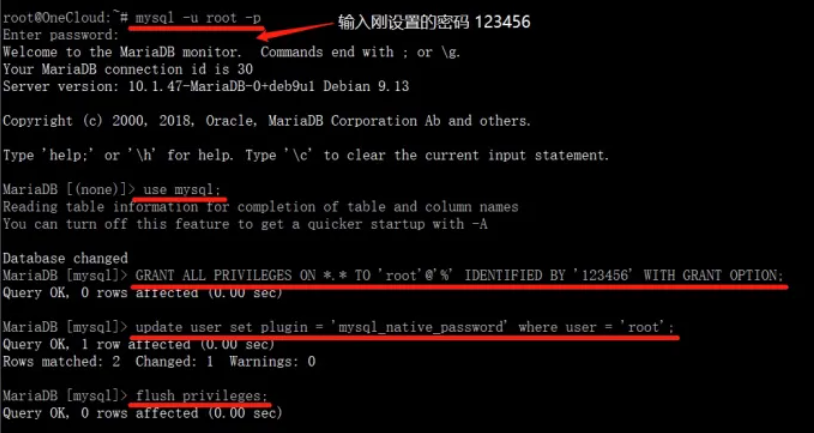
修改MariaDB配置文件，允许远程访问
nano /etc/mysql/mariadb.conf.d/50-server.cnf |
将bind-address = 127.0.0.1 改为 bind-address = 0.0.0.0，然后ctrl + o 保存，ctrl + x 退出。
至此，WEB环境搭建完成。
可道云是最常用的搭建私人云盘的软件之一，分为kod explorer和kodbox两个版本，属于不同产品，适用的场景也不相同。
kod explorer简介
kod explorer无需数据库就可以运行，适用于个人用户或小型团队和企业。它本质上是一个在线的文件管理器，可以用来管理指定文件夹的文件，和File Browser有点类似，可以理解成是一个在线的“我的电脑”。通过kod explorer看到的文件跟我们通过WINSCP或者SSH看到的文件是一样的，说白了就是kod explorer的文件目录结构与磁盘中存储的文件目录结构是一样的，因而比较适合那些对文件管理有强烈需求的用户。
kodbox简介
kodbox 是在 kod explorer 基础上进行了系统重构的全新产品。为满足系统更强性能、更安全、更多特性的拓展需求，Kodbox 对底层架构、存储方式、权限机制等进行了重构，同时继承并升级了 kod explorer 优秀前端体验。KodBox 更多针对企业级的应用需求，可支撑高并发、更多用户数、更高协作和安全要求。
同时，kodbox是需要数据库支持的，它会将你上传的文件分成一个一个的小文件进行存储。在kodbox里面看到的是完整的文件，而通过WINSCP或SSH看到的则是一个一个的小文件，无法正常读取。同样的，通过WINSCP或者FTP上传的文件也不能被kodbox识别，所以kodbox的安全性会更高，更适合用来分享文件，但是不适合做文件的管理，因为kodbox在磁盘中存储的文件是按照日期分类存储的，与kodbox看到的文件目录结构完全不一致。
我搭建可道云私有化环境，主要是用来对我个人家庭的日常文件，如图片、视频等，进行文件的管理和维护，所以我选用了kod explorer作为家用的私有云存储系统。
安装可道云
下面将分别介绍 kod explorer 和 kodbox 的具体安装过程，我们可以根据自身需求，选择其中一个来安装和使用。
安装kod explorer
（1）用命令wget获取kodexplorer安装包或前往可道云官网自行下载。
wget https://static.kodcloud.com/update/download/kodexplorer4.49.zip |
（2）解压kodexplorer到/var/www/html/kode目录下，并赋予kode目录读写权限。
unzip -d /var/www/html/kodb kodexplorer4.49.zip |
（3）使用手机或电脑浏览器访问：玩客云IP/kode，例如我的是：192.168.2.194/kode，根据系统提示新建管理员密码，即可进入系统。
修改kod explorer的默认存储位置
kod explorer登录进去之后的默认存储位置（主文件夹）是在玩客云的内部存储，所以我们上传文件时默认上传到了玩客云的内部存储。由于玩客云的内部存储空间小，且存放着系统文件，可谓一寸空间一寸金。因此，将默认存储位置修改到外部存储设备就显得十分有必要了。
准备外接存储设备
外接存储设备必须是ext4格式的，否则将会挂载失败。如果外接存储设备不是ext4格式，则需要进行格式转化，具体步骤如下：
|
然后将U盘挂载到系统上，并将kod explorer现有数据迁移到U盘
|
修改默认存储位置
在/var/www/html/kode/config目录下新建一个define.php文件，
nano -c /var/www/html/kode/config/define.php |
并输入如下内容：
|
保存文件后，重新登录kod explorer，会发现默认存储位置或主文件夹已经变成了修改后的路径了。
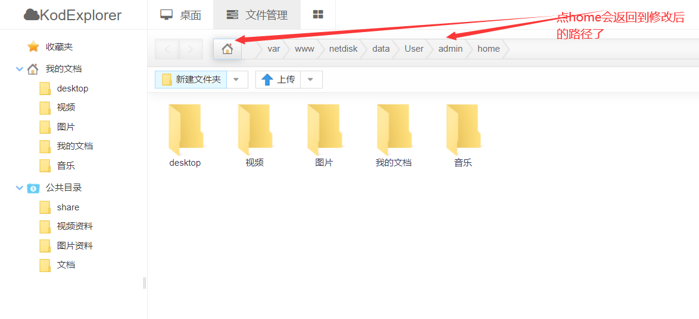
安装kodbox
（1）用命令wget获取可道云KodBox安装包或前往可道云官网自行下载。
wget https://static.kodcloud.com/update/download/kodbox.1.35.zip |
（2）解压kodbox到/var/www/html/kodb目录下，并赋予kodb目录读写权限。
unzip -d /var/www/html/kodb kodbox.1.35.zip |
（3）为了提升系统访问速度，我们采用redis系统缓存，所以先安装下redis-server及php-redis组件。
apt-get install -y php-redis |
（4）重启 php7.0-fpm
service php7.0-fpm restart |
（5）使用手机或电脑浏览器访问：玩客云IP/kodb，例如我的是：192.168.2.194/kodb，会出现安装向导。
环境检测： 由于玩客云s805不是64位CPU，所以只能支持32位，所以在环境检测中选择跳过。
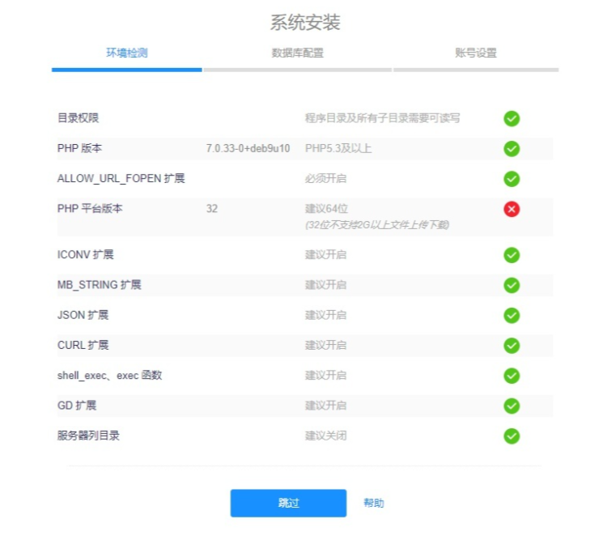
数据库配置： 数据库类型，选择mysql，并填写mysql 的用户名与密码。系统缓存，选择 Redis ，然后点击“确定”即可。
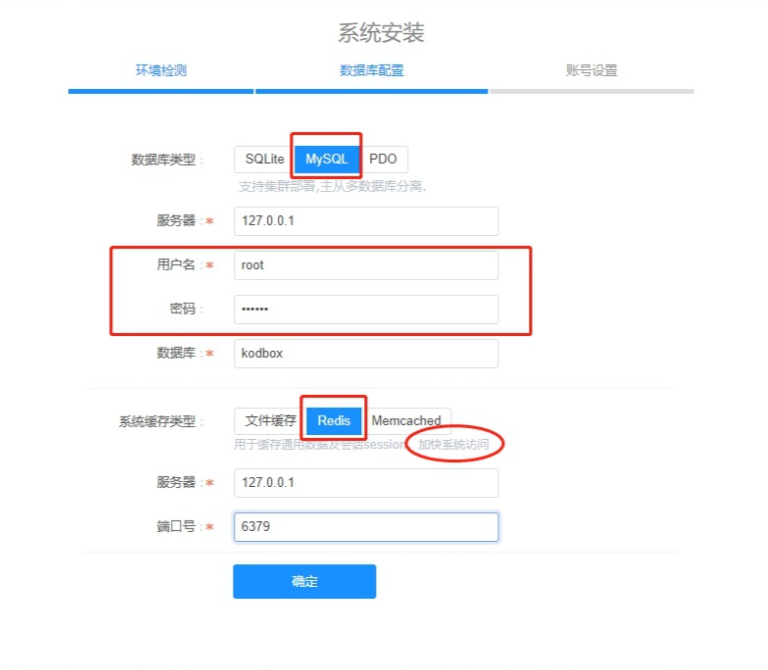
账号设置： 设置好kodbox的管理员密码，就可以登录了。
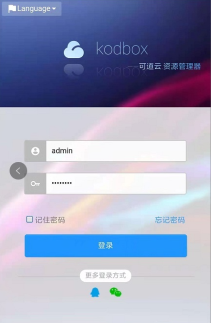
最后可前往可道云官网下载移动端APP，在手机上访问可道云。注意需要配置下服务器站点，如：192.168.2.194/kodb，才能正常访问，且要保证手机与玩客云连接的是同一个路由器。
到这里，利用玩客云来搭建家用轻NAS系统的操作就全部完成了。
遇到的问题及解决方案
使用putty时报错：tput: unknown terminal “xterm”
问题描述： 在使用putty过程中，报错 tput: unknown terminal “xterm”，此时按后退键和上下左右键都会出现乱码。
解决方案： 输入以下命令，重装ncurses-base即可。
apt reinstall ncurses-base |
安装mysql或mariadb时报错：The following packages have unmet dependencies
问题描述： 输入命令apt-get install mysql-server安装mysql时，出现以下错误：
The following packages have unmet dependencies: |
被告知需要安装依赖包：default-mysql-server，然后输入命令apt-get install default-mysql-server安装这个依赖包，但又出现以下错误：
The following packages have unmet dependencies: |
这次被告知需要安装依赖包：mariadb-server-10.1，然后继续输入命令apt-get install mariadb-server-10.1安装这个依赖包，但又出现了以下错误：
The following packages have unmet dependencies: |
根据提示，需要安装依赖包：libdbi-per，然后再输入命令apt-get install libdbi-perl安装这个依赖包，但又出现了以下错误：
The following packages have unmet dependencies: |
可以看出，它又依赖于perlapi-5.24.1，所以继续输入命令apt-get install perlapi-5.24.1安装它，但依然报错：
Package perlapi-5.24.1 is a virtual package provided by: |
到这里，终于出现了终极错误。原来是因为 没有安装perl-base 5.24.1 而导致mysql无法正常安装。但我们通过命令perl -v可以看到，系统里其实已经安装了perl-base，只是版本号不是5.24.1，而是其它别的版本，但一般来说，perl的依赖关联实在太多，我们不能直接卸载它进行重装，否则将会非常麻烦。
解决方案： 基于上述情况，我们可以考虑将当前系统的perl版本平滑降至5.24.1，来解决这个问题。
（1）首先我们去debian官网下载perl-base 5.24.1软件包，由于玩客云的硬件架构师armhf的，所以选择下载 armhf 的软件包。
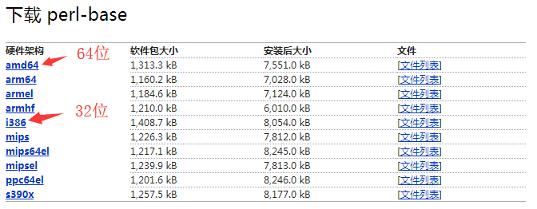
点击“armhf”，进入到另一个页面，选择亚洲节点进行下载，也可输入如下命令，直接获取软件包到玩客云上。
wget http://mirrors.ustc.edu.cn/debian/pool/main/p/perl/perl-base_5.24.1-3+deb9u7_armhf.deb |
（2）通过dpkg来安装deb包
sudo dpkg -i perl-base_5.24.1-3+deb9u7_armhf.deb |
（3）修复相关依赖：
apt --fix-broken install |
此时输入命令perl -v查看perl版本，发现perl版本变成了5.24.1，然后再次输入安装mysql或mariadb的命令，就可以成功安装了。
使用SD卡刷机后，如何恢复SD卡的原始存储空间
问题描述： 有些玩客云刷机教程采用的是SD卡刷机，首先是利用 BalenaEtcher 刻录工具将armbian系统刻录到SD卡中，作为系统启动盘。我尝试过一次，感觉这种方式刷机比较慢，大概等了半个多小时才刷好，所以后来还是采用了拆机短接的方式刷的。那么如何将之前作为系统启动盘的SD卡恢复回去，继续作为普通的文件存储U盘使用呢？
解决方案： 利用diskpart将SD卡中的数据清空，然后再进行格式化，就可以了。具体操作步骤如下：
（1）打开windows命令行，输入diskpart命令。
（2）在diskpart里面，输入list disk命令，查看当前系统挂载的磁盘（包括SATA、U盘、SD卡等），如下图所示。
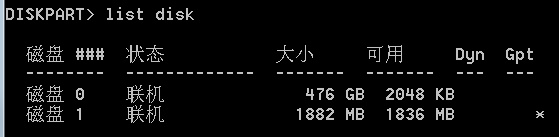
（3）找到要恢复的磁盘，比如我要恢复的是磁盘1，则输入命令select disk 1
（4）再输入命令clean，就可以将4中所选的磁盘数据清空了，再次输入list disk可以看到磁盘的可用已经和大小一样了。此时已经完成了SD卡的恢复，接下来我们将SD卡格式化。
（5）依次输入以下命令：
# 创建卷 |
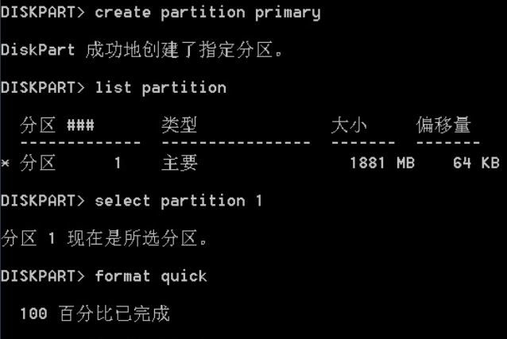